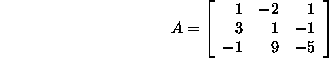
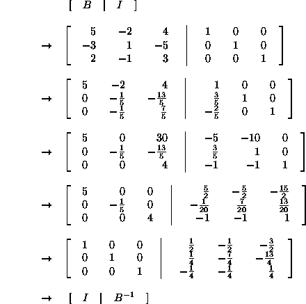

The given matrix:

does not have an inverse. It is actually a singular matrix, i.e. there is more than one solution to the system Ax = b, for some b.
Suppose b = [2 -6 1], then solving for  :
:

The system has more than one solution, i.e. it does not have
a unique solution. Therefore, the matrix A does not have an
inverse.
The given matrix:

has an inverse, since the system Bx = c has a unique solution for some c.
To find the inverse  of matrix B:
of matrix B:

i.e.